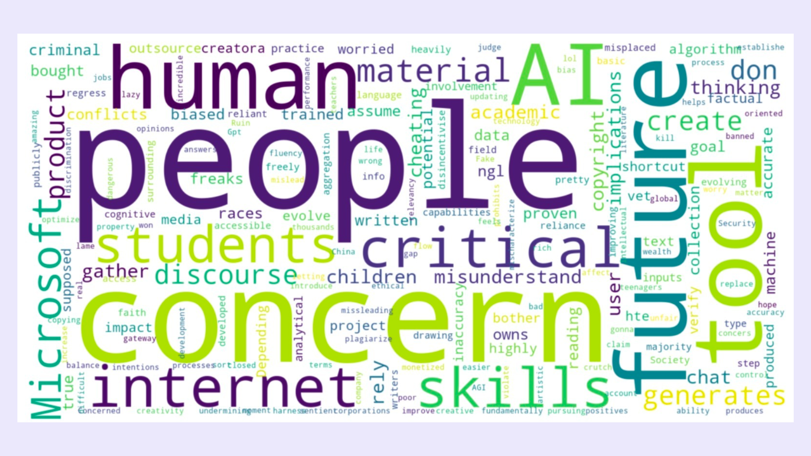
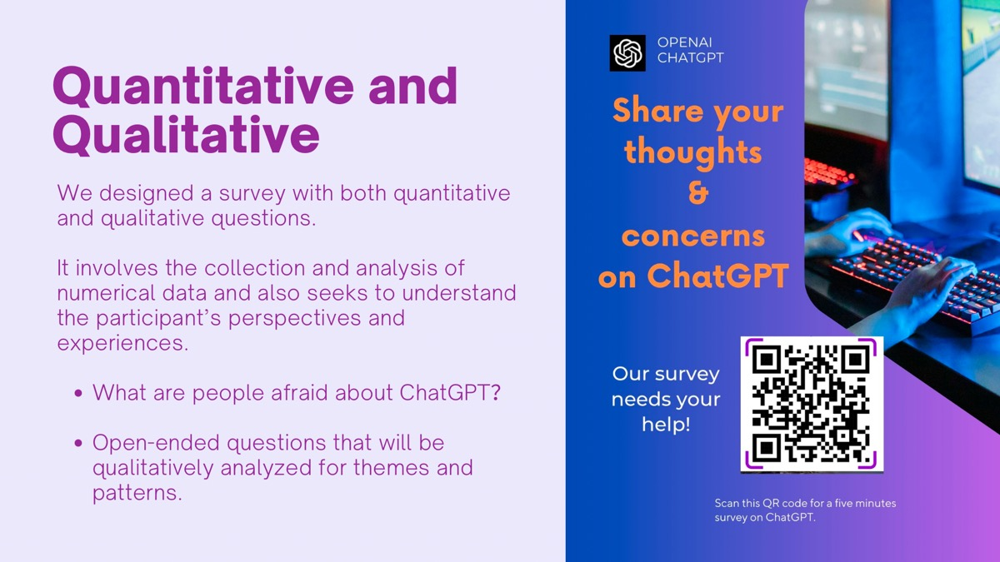
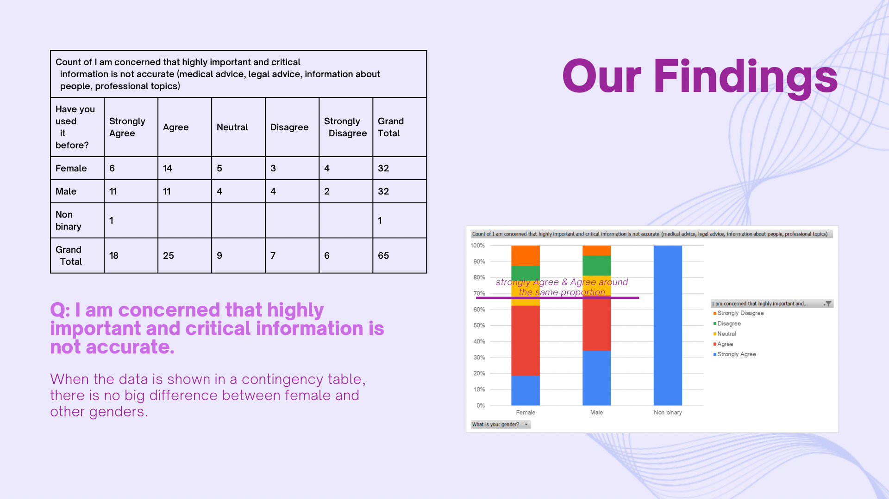

Exploring Public Perceptions of ChatGPT
The rapid rise of AI technologies like ChatGPT has captured public attention and raised numerous concerns. While media coverage on these issues is extensive, few in-depth research studies have analyzed public sentiment on this topic. This project aims to fill that gap, investigating public concerns regarding ChatGPT and exploring possible solutions.
Project Details / Findings
We designed a comprehensive survey incorporating both quantitative and qualitative questions to capture a wide range of perspectives on ChatGPT. Our survey targeted a diverse sample and sought to uncover core concerns, including data privacy, employment impacts, and the potential for misinformation.
Quantitative and Qualitative Analysis: Using T-tests, Chi-square tests, pivot tables, and thematic word clouds (as shown in Figures 1 and 2), we analyzed both numerical data and open-ended responses to reveal patterns and trends in public sentiment.
Survey Outreach: To encourage broad participation, we shared a QR code linking to the survey (Figure 3), inviting people to share their thoughts and experiences with ChatGPT.
Quantitative and Qualitative Analysis: Using T-tests, Chi-square tests, pivot tables, and thematic word clouds (as shown in Figures 1 and 2), we analyzed both numerical data and open-ended responses to reveal patterns and trends in public sentiment.
Survey Outreach: To encourage broad participation, we shared a QR code linking to the survey (Figure 3), inviting people to share their thoughts and experiences with ChatGPT.
Our findings, represented in Figure 4, indicate that the primary concerns among participants revolve around the accuracy of information, especially on critical topics like medical and legal advice. Interestingly, concerns were fairly consistent across gender groups, with no significant difference in concern levels between female and male respondents.
Project Gallery
 Figure 1: Word cloud illustrating common themes around ChatGPT.
Figure 1: Word cloud illustrating common themes around ChatGPT.

Figure 2: Additional themes identified from qualitative responses.

Figure 3: QR code shared to encourage survey participation.

Figure 4: Graph showing key findings on accuracy concerns across gender groups.